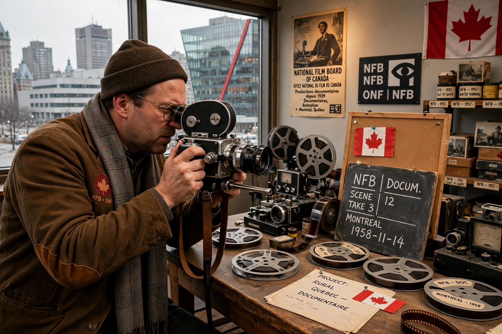

Founded: 2 May 1939
Founder: John Grierson (first commissioner)
Headquarters: Montreal, Quebec
Type: Canadian federal cultural agency
Output: Documentaries, animation, interactive media
The National Film Board of Canada (NFB; French: Office national du film du Canada) is a Canadian public film and digital media producer and distributor, an agency of the Government of Canada. Founded in 1939 under Scottish documentary pioneer John Grierson, it has produced more than 13,000 works and won over 5,000 awards, including multiple Academy Awards.
Created at the outset of the Second World War, the NFB initially made propaganda and informational films such as the Canada Carries On series. After the war it became renowned for documentary and for its animation studio, where Norman McLaren pioneered techniques including drawn-on-film animation (Neighbours, 1952, Oscar winner).
Acclaimed NFB productions include City of Gold (1957), The Sweater (1980), Ryan (2004), Stories We Tell (Sarah Polley, 2012, co-production context) and extensive Indigenous and French-language cinema programs including Studio D, its pioneering women's studio (1974–1996).
The NFB streams thousands of films free on NFB.ca and has become a leader in interactive documentaries and virtual reality works.